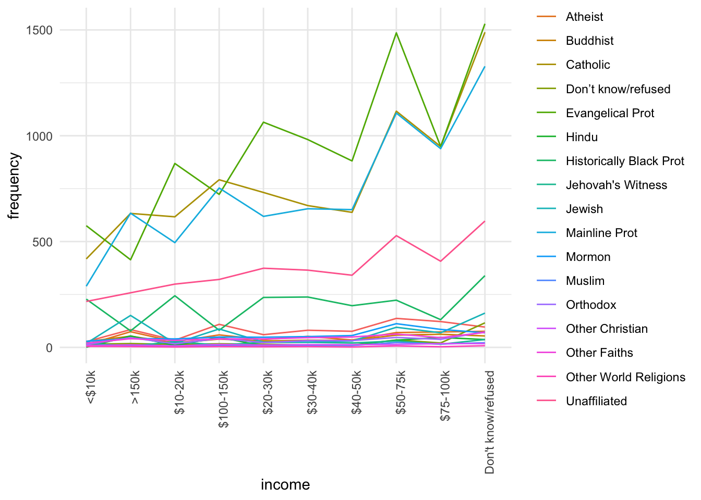
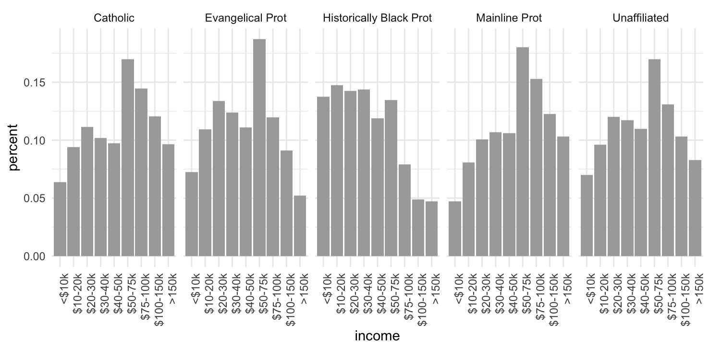
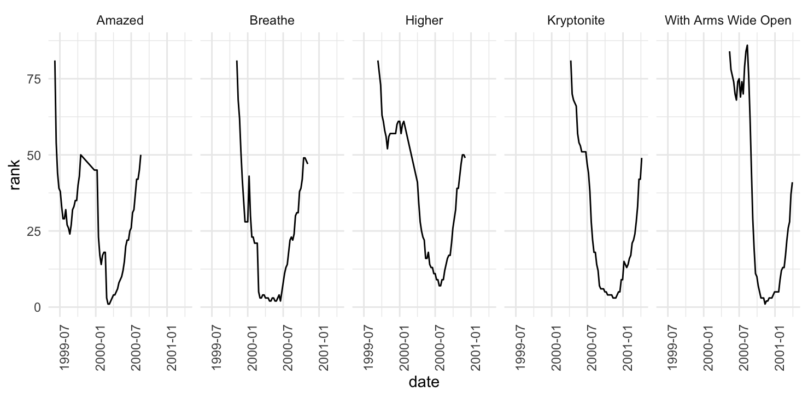

Chapter 3 Manipulación y agrupación de datos
El material de la clase se puede descargar de aquí.
En esta sección continuamos con la introducción a R para análisis de datos, en particular mostraremos herramientas de manipulación y transformación de datos. Trataremos los siguientes puntos:
Estrategia separa-aplica-combina.
Reestructura de datos y el principio de los datos limpios.
Es sabido que limpieza y preparación de datos ocupan gran parte del tiempo del análisis de datos (Dasu y Johnson, 2003 y NYT’s ‘Janitor Work’ Is Key Hurdle to Insights), es por ello que vale la pena dedicar un tiempo a aprender técnicas que faciliten estas tareas, y entender que estructura en los datos es más conveniente para trabajar.
3.1 Transformación de datos
Datos Tidy
Una base de datos tidy es una base de datos en la cuál:
- Cada vararible que se medida debe estar en una columna.
- Cada observación distinta de esa variable debe estar en una fila diferente.
- Cada valor debe de estar en su propia celda
En general, la forma en que representaríamos una base de datos tidy en R es usando un data frame.

Por ejemplo, los datos del Secretariado ejecutivo:
- Datos con la misma variable en diferentes columnas
#> # A tibble: 6 × 19
#> Año Clave_Ent Entidad Bien …¹ Tipo …² Subti…³ Modal…⁴ Enero Febrero Marzo
#> <dbl> <dbl> <chr> <chr> <chr> <chr> <chr> <dbl> <dbl> <dbl>
#> 1 2021 1 Aguascali… La vid… Homici… Homici… Con ar… 2 1 4
#> 2 2021 1 Aguascali… La vid… Homici… Homici… Con ar… 1 1 1
#> 3 2021 1 Aguascali… La vid… Homici… Homici… Con ot… 0 3 1
#> 4 2021 1 Aguascali… La vid… Homici… Homici… No esp… 0 0 0
#> 5 2021 1 Aguascali… La vid… Homici… Homici… Con ar… 0 0 0
#> 6 2021 1 Aguascali… La vid… Homici… Homici… Con ar… 0 0 0
#> # … with 9 more variables: Abril <dbl>, Mayo <dbl>, Junio <dbl>, Julio <dbl>,
#> # Agosto <dbl>, Septiembre <dbl>, Octubre <dbl>, Noviembre <dbl>,
#> # Diciembre <dbl>, and abbreviated variable names ¹`Bien jurídico afectado`,
#> # ²`Tipo de delito`, ³`Subtipo de delito`, ⁴Modalidad#> # A tibble: 20 × 9
#> Año Clave_Ent Entidad Bien j…¹ Tipo …² Subti…³ Modal…⁴ mes total…⁵
#> <dbl> <dbl> <chr> <chr> <chr> <chr> <chr> <chr> <dbl>
#> 1 2021 1 Aguascalientes La vida… Homici… Homici… Con ar… Enero 2
#> 2 2021 1 Aguascalientes La vida… Homici… Homici… Con ar… Enero 1
#> 3 2021 1 Aguascalientes La vida… Homici… Homici… Con ot… Enero 0
#> 4 2021 1 Aguascalientes La vida… Homici… Homici… No esp… Enero 0
#> 5 2021 1 Aguascalientes La vida… Homici… Homici… Con ar… Enero 0
#> 6 2021 1 Aguascalientes La vida… Homici… Homici… Con ar… Enero 0
#> 7 2021 1 Aguascalientes La vida… Homici… Homici… En acc… Enero 8
#> 8 2021 1 Aguascalientes La vida… Homici… Homici… Con ot… Enero 0
#> 9 2021 1 Aguascalientes La vida… Homici… Homici… No esp… Enero 0
#> 10 2021 1 Aguascalientes La vida… Lesion… Lesion… Con ar… Enero 5
#> 11 2021 1 Aguascalientes La vida… Lesion… Lesion… Con ar… Enero 7
#> 12 2021 1 Aguascalientes La vida… Lesion… Lesion… Con ot… Enero 160
#> 13 2021 1 Aguascalientes La vida… Lesion… Lesion… No esp… Enero 56
#> 14 2021 1 Aguascalientes La vida… Lesion… Lesion… Con ar… Enero 0
#> 15 2021 1 Aguascalientes La vida… Lesion… Lesion… Con ar… Enero 0
#> 16 2021 1 Aguascalientes La vida… Lesion… Lesion… En acc… Enero 59
#> 17 2021 1 Aguascalientes La vida… Lesion… Lesion… Con ot… Enero 0
#> 18 2021 1 Aguascalientes La vida… Lesion… Lesion… No esp… Enero 18
#> 19 2021 1 Aguascalientes La vida… Femini… Femini… Con ar… Enero 0
#> 20 2021 1 Aguascalientes La vida… Femini… Femini… Con ar… Enero 1
#> # … with abbreviated variable names ¹`Bien jurídico afectado`,
#> # ²`Tipo de delito`, ³`Subtipo de delito`, ⁴Modalidad, ⁵total_delitos#> # A tibble: 40 × 33
#> # Groups: Tipo de delito [40]
#> Tipo de del…¹ Aguas…² Baja …³ Baja …⁴ Campe…⁵ Chiapas Chihu…⁶ Ciuda…⁷ Coahu…⁸
#> <chr> <dbl> <dbl> <dbl> <dbl> <dbl> <dbl> <dbl> <dbl>
#> 1 Aborto 0 1 1 0 3 1 8 0
#> 2 Abuso de con… 50 29 12 0 4 60 302 52
#> 3 Abuso sexual 0 70 20 3 17 103 206 46
#> 4 Acoso sexual 0 0 8 0 7 0 86 15
#> 5 Allanamiento… 35 185 9 6 8 70 47 39
#> 6 Amenazas 227 324 102 5 26 248 1110 359
#> 7 Contra el me… 2 0 0 0 1 18 45 0
#> 8 Corrupción d… 5 50 3 0 3 5 21 3
#> 9 Daño a la pr… 317 576 85 12 67 656 697 459
#> 10 Delitos come… 47 69 18 0 10 134 307 13
#> # … with 30 more rows, 24 more variables: Colima <dbl>, Durango <dbl>,
#> # Guanajuato <dbl>, Guerrero <dbl>, Hidalgo <dbl>, Jalisco <dbl>,
#> # México <dbl>, `Michoacán de Ocampo` <dbl>, Morelos <dbl>, Nayarit <dbl>,
#> # `Nuevo León` <dbl>, Oaxaca <dbl>, Puebla <dbl>, Querétaro <dbl>,
#> # `Quintana Roo` <dbl>, `San Luis Potosí` <dbl>, Sinaloa <dbl>, Sonora <dbl>,
#> # Tabasco <dbl>, Tamaulipas <dbl>, Tlaxcala <dbl>,
#> # `Veracruz de Ignacio de la Llave` <dbl>, Yucatán <dbl>, Zacatecas <dbl>, …#> estado municipio mes total_delitos
#> 1 Estado de México <NA> Enero 143
#> 2 Estado de México <NA> Febrero 234
#> 3 Estado de México <NA> Marzo 532
#> 4 <NA> Toluca Enero 12
#> 5 <NA> Toluca Febrero 4
#> 6 <NA> Toluca Marzo 55Separa-aplica-combina (split-apply-combine)
Muchos problemas de análisis de datos involucran la aplicación de la estrategia separa-aplica-combina (plyr?), esta consiste en romper un problema en pedazos (de acuerdo a una variable de interés), operar sobre cada subconjunto de manera independiente (ej. calcular la media de cada grupo, ordenar observaciones por grupo, estandarizar por grupo) y después unir los pedazos nuevamente. El siguiente diagrama ejemplifiaca el paradigma de divide-aplica-combina:
- Separa la base de datos original.
- Aplica funciones a cada subconjunto.
- Combina los resultados en una nueva base de datos.

Ahora, cuando pensamos como implementar la estrategia divide-aplica-combina es
natural pensar en iteraciones, por ejemplo utilizar un ciclo for para recorrer
cada grupo de interés y aplicar las funciones, sin embargo la aplicación de
ciclos for desemboca en código difícil de entender por lo que preferimos
trabajar con funciones creadas para estas tareas, usaremos el paquete
dplyr que además de ser más claro suele ser más veloz.
Estudiaremos las siguientes funciones:
- filter: obten un subconjunto de las filas de acuerdo a un criterio.
- select: selecciona columnas de acuerdo al nombre
- arrange: reordena las filas
- mutate: agrega nuevas variables
- summarise: reduce variables a valores (crear nuevas bases de datos con resúmenes de variables de la base original)
Estas funciones trabajan de manera similar, el primer argumento que reciben es un data frame, los argumentos que siguen indican que operación se va a efectuar y el resultado es un nuevo data frame.
Adicionalmente, se pueden usar con group_by que cambia el dominio de cada función, pasando de operar en el conjunto de datos completos a operar en grupos, esto lo veremos más adelante.
Ejemplos y lectura de datos
En esta sección trabajaremos con bases de datos de vuelos del aeropuerto de Houston. Comenzamos importando los datos a R.
Para leer los datos usamos funciones del paquete readr que forma parte del
tidyverse, notemos que si estamos usando RStudio podemos generar los comandos
de lectura de datos usando la opción Import Dataset en la ventana de
Environment.

Si usamos la opción de importar datos usando la funcionalidad point-and-click de RStudio, es importante copiar los comandos al script de R para no perder reproducibilidad.
library(tidyverse)
flights <- read_csv("data/flights.csv")
#> Rows: 227496 Columns: 14
#> ── Column specification ────────────────────────────────────────────────────────
#> Delimiter: ","
#> chr (3): carrier, dest, plane
#> dbl (10): hour, minute, dep, arr, dep_delay, arr_delay, flight, cancelled, ...
#> dttm (1): date
#>
#> ℹ Use `spec()` to retrieve the full column specification for this data.
#> ℹ Specify the column types or set `show_col_types = FALSE` to quiet this message.
flights
#> # A tibble: 227,496 × 14
#> date hour minute dep arr dep_delay arr_d…¹ carrier flight
#> <dttm> <dbl> <dbl> <dbl> <dbl> <dbl> <dbl> <chr> <dbl>
#> 1 2011-01-01 12:00:00 14 0 1400 1500 0 -10 AA 428
#> 2 2011-01-02 12:00:00 14 1 1401 1501 1 -9 AA 428
#> 3 2011-01-03 12:00:00 13 52 1352 1502 -8 -8 AA 428
#> 4 2011-01-04 12:00:00 14 3 1403 1513 3 3 AA 428
#> 5 2011-01-05 12:00:00 14 5 1405 1507 5 -3 AA 428
#> 6 2011-01-06 12:00:00 13 59 1359 1503 -1 -7 AA 428
#> 7 2011-01-07 12:00:00 13 59 1359 1509 -1 -1 AA 428
#> 8 2011-01-08 12:00:00 13 55 1355 1454 -5 -16 AA 428
#> 9 2011-01-09 12:00:00 14 43 1443 1554 43 44 AA 428
#> 10 2011-01-10 12:00:00 14 43 1443 1553 43 43 AA 428
#> # … with 227,486 more rows, 5 more variables: dest <chr>, plane <chr>,
#> # cancelled <dbl>, time <dbl>, dist <dbl>, and abbreviated variable name
#> # ¹arr_delay
weather <- read_csv("data/weather.csv")
#> Rows: 8723 Columns: 14
#> ── Column specification ────────────────────────────────────────────────────────
#> Delimiter: ","
#> chr (3): wind_dir, conditions, events
#> dbl (10): hour, temp, dew_point, humidity, pressure, visibility, wind_dir2,...
#> date (1): date
#>
#> ℹ Use `spec()` to retrieve the full column specification for this data.
#> ℹ Specify the column types or set `show_col_types = FALSE` to quiet this message.
weather
#> # A tibble: 8,723 × 14
#> date hour temp dew_point humidity pressure visibility wind_…¹ wind_…²
#> <date> <dbl> <dbl> <dbl> <dbl> <dbl> <dbl> <chr> <dbl>
#> 1 2011-01-01 0 59 28.9 32 29.9 10 NNE 20
#> 2 2011-01-01 1 57.2 28.4 33 29.9 10 NNE 20
#> 3 2011-01-01 2 55.4 28.4 36 29.9 10 NNW 340
#> 4 2011-01-01 3 53.6 28.4 38 29.9 10 North 350
#> 5 2011-01-01 4 NA NA NA 30.0 10 NNW 340
#> 6 2011-01-01 5 NA NA NA 30.0 10 North 350
#> 7 2011-01-01 6 53.1 17.1 24 30.0 10 North 360
#> 8 2011-01-01 7 53.1 16 23 30.1 10 North 10
#> 9 2011-01-01 8 54 18 24 30.1 10 North 10
#> 10 2011-01-01 9 55.4 17.6 23 30.1 10 NNE 20
#> # … with 8,713 more rows, 5 more variables: wind_speed <dbl>, gust_speed <dbl>,
#> # precip <dbl>, conditions <chr>, events <chr>, and abbreviated variable
#> # names ¹wind_dir, ²wind_dir2
planes <- read_csv("data/planes.csv")
#> Rows: 2853 Columns: 9
#> ── Column specification ────────────────────────────────────────────────────────
#> Delimiter: ","
#> chr (5): plane, mfr, model, engine, type
#> dbl (4): year, no.eng, no.seats, speed
#>
#> ℹ Use `spec()` to retrieve the full column specification for this data.
#> ℹ Specify the column types or set `show_col_types = FALSE` to quiet this message.
planes
#> # A tibble: 2,853 × 9
#> plane year mfr model no.eng no.se…¹ speed engine type
#> <chr> <dbl> <chr> <chr> <dbl> <dbl> <dbl> <chr> <chr>
#> 1 N576AA 1991 MCDONNELL DOUGLAS DC-9-82(MD-… 2 172 NA Turbo… Fixe…
#> 2 N557AA 1993 MARZ BARRY KITFOX IV 1 2 NA Recip… Fixe…
#> 3 N403AA 1974 RAVEN S55A NA 1 60 None Ball…
#> 4 N492AA 1989 MCDONNELL DOUGLAS DC-9-82(MD-… 2 172 NA Turbo… Fixe…
#> 5 N262AA 1985 MCDONNELL DOUGLAS DC-9-82(MD-… 2 172 NA Turbo… Fixe…
#> 6 N493AA 1989 MCDONNELL DOUGLAS DC-9-82(MD-… 2 172 NA Turbo… Fixe…
#> 7 N477AA 1988 MCDONNELL DOUGLAS DC-9-82(MD-… 2 172 NA Turbo… Fixe…
#> 8 N476AA 1988 MCDONNELL DOUGLAS DC-9-82(MD-… 2 172 NA Turbo… Fixe…
#> 9 N504AA NA AUTHIER ANTHONY P TIERRA II 1 2 NA Recip… Fixe…
#> 10 N565AA 1987 MCDONNELL DOUGLAS DC-9-83(MD-… 2 172 NA Turbo… Fixe…
#> # … with 2,843 more rows, and abbreviated variable name ¹no.seats
airports <- read_csv("data/airports.csv")
#> Rows: 3376 Columns: 7
#> ── Column specification ────────────────────────────────────────────────────────
#> Delimiter: ","
#> chr (5): iata, airport, city, state, country
#> dbl (2): lat, long
#>
#> ℹ Use `spec()` to retrieve the full column specification for this data.
#> ℹ Specify the column types or set `show_col_types = FALSE` to quiet this message.
airports
#> # A tibble: 3,376 × 7
#> iata airport city state country lat long
#> <chr> <chr> <chr> <chr> <chr> <dbl> <dbl>
#> 1 00M Thigpen Bay Springs MS USA 32.0 -89.2
#> 2 00R Livingston Municipal Livingston TX USA 30.7 -95.0
#> 3 00V Meadow Lake Colorado Springs CO USA 38.9 -105.
#> 4 01G Perry-Warsaw Perry NY USA 42.7 -78.1
#> 5 01J Hilliard Airpark Hilliard FL USA 30.7 -81.9
#> 6 01M Tishomingo County Belmont MS USA 34.5 -88.2
#> 7 02A Gragg-Wade Clanton AL USA 32.9 -86.6
#> 8 02C Capitol Brookfield WI USA 43.1 -88.2
#> 9 02G Columbiana County East Liverpool OH USA 40.7 -80.6
#> 10 03D Memphis Memorial Memphis MO USA 40.4 -92.2
#> # … with 3,366 more rowsFiltrar
Creamos una base de datos de juguete para mostrar el funcionamiento de cada instrucción:
df_ej <- tibble(genero = c("mujer", "hombre", "mujer", "mujer", "hombre"),
estatura = c(1.65, 1.80, 1.70, 1.60, 1.67))
df_ej
#> # A tibble: 5 × 2
#> genero estatura
#> <chr> <dbl>
#> 1 mujer 1.65
#> 2 hombre 1.8
#> 3 mujer 1.7
#> 4 mujer 1.6
#> 5 hombre 1.67El primer argumento de filter() es el nombre del data frame, los subsecuentes
son las expresiones que indican que filas filtrar.
filter(df_ej, genero == "mujer")
#> # A tibble: 3 × 2
#> genero estatura
#> <chr> <dbl>
#> 1 mujer 1.65
#> 2 mujer 1.7
#> 3 mujer 1.6
filter(df_ej, estatura > 1.65 & estatura < 1.75)
#> # A tibble: 2 × 2
#> genero estatura
#> <chr> <dbl>
#> 1 mujer 1.7
#> 2 hombre 1.67Algunos operadores importantes para filtrar son:
x > 1
x >= 1
x < 1
x <= 1
x != 1
x == 1
x %in% c("a", "b")Debemos tener cuidado al usar ==
sqrt(2) ^ 2 == 2
#> [1] FALSE
1/49 * 49 == 1
#> [1] FALSELos resultados de arriba se deben a que las computadoras usan aritmética de precisión finita:
print(1/49 * 49, digits = 20)
#> [1] 0.99999999999999988898Para estos casos es útil usar la función near()
near(sqrt(2) ^ 2, 2)
#> [1] TRUE
near(1 / 49 * 49, 1)
#> [1] TRUELos operadores booleanos también son convenientes para filtrar:
# Conjuntos
a | b
a & b
a & !b
xor(a, b)El siguiente esquema nos ayuda a entender que hace cada operación:
knitr::include_graphics("imagenes/transform-logical.png")
 Encuentra todos los vuelos hacia SFO ó OAK.
Encuentra todos los vuelos hacia SFO ó OAK.
Los vuelos con un retraso mayor a una hora.
En los que el retraso de llegada es más del doble que el retraso de salida.
Un caso común es cuando se desea eliminar los datos con faltantes en una o más
columnas de las tablas de datos, en R los datos faltantes se expresan como NA,
para eliminar los faltantes en la variable dep_delay resulta natural escribir:
filter(flights, dep_delay != NA)
#> # A tibble: 0 × 14
#> # … with 14 variables: date <dttm>, hour <dbl>, minute <dbl>, dep <dbl>,
#> # arr <dbl>, dep_delay <dbl>, arr_delay <dbl>, carrier <chr>, flight <dbl>,
#> # dest <chr>, plane <chr>, cancelled <dbl>, time <dbl>, dist <dbl>que nos devuelve una tabla vacía, sin embargo, si hay faltantes en esta
variable. El problema resulta de usar el operador !=, pensemos ¿qué regresan
las siguientes expresiones?
5 + NA
NA / 2
sum(c(5, 4, NA))
mean(c(5, 4, NA))
NA < 3
NA == 3
NA == NALas expresiones anteriores regresan NA, el hecho que la media de un vector
que incluye NAs o su suma regrese NAs se debe a que el default en R es
propagar los valores faltantes, esto es, si deconozco el valor de una de las
componentes de un vector, también desconozco la suma del mismo; sin embargo,
muchas funciones tienen un argumento na.rm para removerlos,
sum(c(5, 4, NA), na.rm = TRUE)
#> [1] 9
mean(c(5, 4, NA), na.rm = TRUE)
#> [1] 4.5Aún queda pendiente, como filtrarlos en una tabla, para esto veamos que el manejo de datos faltantes en R utiliza una lógica ternaria (como SQL):
NA == NA
#> [1] NALa expresión anterior puede resultar confusa, una manera de pensar en esto es considerar los NA como no sé, por ejemplo si no se la edad de Juan y no se la edad de Esteban, la respuesta a ¿Juan tiene la misma edad que Esteban? es no sé (NA).
edad_Juan <- NA
edad_Esteban <- NA
edad_Juan == edad_Esteban
#> [1] NA
edad_Jose <- 32
# Juan es menor que José?
edad_Juan < edad_Jose
#> [1] NAPor tanto para determinar si un valor es faltante usamos la instrucción
is.na().
is.na(NA)
#> [1] TRUEY finalmente podemos filtrar con
filter(flights, is.na(dep_delay))Seleccionar
Elegir columnas de un conjunto de datos.
df_ej
#> # A tibble: 5 × 2
#> genero estatura
#> <chr> <dbl>
#> 1 mujer 1.65
#> 2 hombre 1.8
#> 3 mujer 1.7
#> 4 mujer 1.6
#> 5 hombre 1.67
select(df_ej, genero)
#> # A tibble: 5 × 1
#> genero
#> <chr>
#> 1 mujer
#> 2 hombre
#> 3 mujer
#> 4 mujer
#> 5 hombre
select(df_ej, -genero)
#> # A tibble: 5 × 1
#> estatura
#> <dbl>
#> 1 1.65
#> 2 1.8
#> 3 1.7
#> 4 1.6
#> 5 1.67select(df_ej, starts_with("g"))
select(df_ej, contains("g")) Ve la ayuda de select (?select) y escribe tres
maneras de seleccionar las variables de retraso (delay).
Ordenar
Ordenar de acuerdo al valor de una o más variables:
arrange(df_ej, genero)
#> # A tibble: 5 × 2
#> genero estatura
#> <chr> <dbl>
#> 1 hombre 1.8
#> 2 hombre 1.67
#> 3 mujer 1.65
#> 4 mujer 1.7
#> 5 mujer 1.6
arrange(df_ej, desc(estatura))
#> # A tibble: 5 × 2
#> genero estatura
#> <chr> <dbl>
#> 1 hombre 1.8
#> 2 mujer 1.7
#> 3 hombre 1.67
#> 4 mujer 1.65
#> 5 mujer 1.6 Ordena los vuelos por fecha de salida y hora.
¿Cuáles son los vuelos con mayor retraso?
¿Qué vuelos ganaron más tiempo en el aire?
Mutar
Mutar consiste en crear nuevas variables aplicando una función a columnas existentes:
mutate(df_ej, estatura_cm = estatura * 100)
#> # A tibble: 5 × 3
#> genero estatura estatura_cm
#> <chr> <dbl> <dbl>
#> 1 mujer 1.65 165
#> 2 hombre 1.8 180
#> 3 mujer 1.7 170
#> 4 mujer 1.6 160
#> 5 hombre 1.67 167
mutate(df_ej, estatura_cm = estatura * 100, estatura_in = estatura_cm * 0.3937)
#> # A tibble: 5 × 4
#> genero estatura estatura_cm estatura_in
#> <chr> <dbl> <dbl> <dbl>
#> 1 mujer 1.65 165 65.0
#> 2 hombre 1.8 180 70.9
#> 3 mujer 1.7 170 66.9
#> 4 mujer 1.6 160 63.0
#> 5 hombre 1.67 167 65.7 Calcula la velocidad en millas por hora a partir de
la variable tiempo y la distancia (en millas). ¿Quá vuelo fue el más rápido?
Crea una nueva variable que muestre cuánto tiempo se ganó o perdió durante el vuelo.
Hay muchas funciones que podemos usar para crear nuevas variables con mutate(), éstas deben cumplir ser funciones vectorizadas, es decir, reciben un vector de valores y devuelven un vector de la misma dimensión.
Summarise y resúmenes por grupo
Summarise sirve para crear nuevas bases de datos con resúmenes o agregaciones de los datos originales.
summarise(df_ej, promedio = mean(estatura))
#> # A tibble: 1 × 1
#> promedio
#> <dbl>
#> 1 1.68Podemos hacer resúmenes por grupo, primero creamos una base de datos agrupada:
by_genero <- group_by(df_ej, genero)
by_genero
#> # A tibble: 5 × 2
#> # Groups: genero [2]
#> genero estatura
#> <chr> <dbl>
#> 1 mujer 1.65
#> 2 hombre 1.8
#> 3 mujer 1.7
#> 4 mujer 1.6
#> 5 hombre 1.67y después operamos sobre cada grupo, creando un resumen a nivel grupo y uniendo los subconjuntos en una base nueva:
summarise(by_genero, promedio = mean(estatura))
#> # A tibble: 2 × 2
#> genero promedio
#> <chr> <dbl>
#> 1 hombre 1.74
#> 2 mujer 1.65 Calcula el retraso promedio por fecha.
¿Qué otros resúmenes puedes hacer para explorar el retraso por fecha?
- Algunas funciones útiles con summarise son min(x), median(x), max(x), quantile(x, p), n(), sum(x), sum(x > 1), mean(x > 1), sd(x).
flights$date_only <- as.Date(flights$date)
by_date <- group_by(flights, date_only)
no_miss <- filter(by_date, !is.na(dep))
delays <- summarise(no_miss, mean_delay = mean(dep_delay), n = n())Operador pipeline
En R cuando uno hace varias operaciones es difícil leer y entender el código:
hourly_delay <- filter(summarise(group_by(filter(flights, !is.na(dep_delay)),
date_only, hour), delay = mean(dep_delay), n = n()), n > 10)
#> `summarise()` has grouped output by 'date_only'. You can override using the
#> `.groups` argument.La dificultad radica en que usualmente los parámetros se asignan después del
nombre de la función usando (). El operador Forward Pipe (%>%) cambia este orden, de manera que un parámetro que precede a la función es enviado ("piped") a la función:x %>% f(y)se vuelvef(x,y),x %>% f(y) %>% g(z)se vuelveg(f(x, y), z)`. Es así que podemos reescribir el código para poder leer las
operaciones que vamos aplicando de izquierda a derecha
y de arriba hacia abajo.
Veamos como cambia el código anterior:
hourly_delay <- flights %>%
filter(!is.na(dep_delay)) %>%
group_by(date_only, hour) %>%
summarise(delay = mean(dep_delay), n = n()) %>%
filter(n > 10)
#> `summarise()` has grouped output by 'date_only'. You can override using the
#> `.groups` argument.podemos leer %>% como “después”.
¿Qué destinos tienen el promedio de retrasos más
alto?
¿Qué vuelos (compañía + vuelo) ocurren diario?
En promedio, ¿Cómo varían a lo largo del día los retrasos de vuelos no cancelados? (pista: hour + minute / 60)
Variables por grupo
En ocasiones es conveniente crear variables por grupo, por ejemplo estandarizar dentro de cada grupo z = (x - mean(x)) / sd(x).
Veamos un ejemplo:
planes <- flights %>%
filter(!is.na(arr_delay)) %>%
group_by(plane) %>%
filter(n() > 30)
planes %>%
mutate(z_delay =
(arr_delay - mean(arr_delay)) / sd(arr_delay)) %>%
filter(z_delay > 5)
#> # A tibble: 1,403 × 16
#> # Groups: plane [856]
#> date hour minute dep arr dep_delay arr_d…¹ carrier flight
#> <dttm> <dbl> <dbl> <dbl> <dbl> <dbl> <dbl> <chr> <dbl>
#> 1 2011-01-28 12:00:00 15 16 1516 1916 351 326 CO 1
#> 2 2011-01-27 12:00:00 18 22 1822 1945 234 210 CO 137
#> 3 2011-01-27 12:00:00 21 37 2137 2254 242 219 CO 150
#> 4 2011-01-27 12:00:00 0 11 11 216 168 137 CO 209
#> 5 2011-01-27 12:00:00 22 37 2237 153 227 208 CO 250
#> 6 2011-01-27 12:00:00 21 28 2128 136 231 216 CO 1632
#> 7 2011-01-26 12:00:00 11 46 1146 1633 171 193 CO 510
#> 8 2011-01-26 12:00:00 9 49 949 1436 144 180 CO 776
#> 9 2011-01-21 12:00:00 19 11 1911 2352 94 112 CO 1632
#> 10 2011-01-20 12:00:00 6 35 635 807 780 775 CO 59
#> # … with 1,393 more rows, 7 more variables: dest <chr>, plane <chr>,
#> # cancelled <dbl>, time <dbl>, dist <dbl>, date_only <date>, z_delay <dbl>,
#> # and abbreviated variable name ¹arr_delayVerbos de dos tablas
¿Cómo mostramos los retrasos de los vuelos en un mapa?
Para responder esta pregunta necesitamos unir la base de datos de vuelos con la de aeropuertos.
location <- airports %>%
select(dest = iata, name = airport, lat, long)
flights %>%
group_by(dest) %>%
filter(!is.na(arr_delay)) %>%
summarise(
arr_delay = mean(arr_delay),
n = n() ) %>%
arrange(desc(arr_delay)) %>%
left_join(location)
#> Joining, by = "dest"
#> # A tibble: 116 × 6
#> dest arr_delay n name lat long
#> <chr> <dbl> <int> <chr> <dbl> <dbl>
#> 1 ANC 26.1 124 Ted Stevens Anchorage International 61.2 -150.
#> 2 CID 17.8 406 Eastern Iowa 41.9 -91.7
#> 3 DSM 16.0 634 Des Moines International 41.5 -93.7
#> 4 SFO 14.9 2800 San Francisco International 37.6 -122.
#> 5 BPT 14.3 3 Southeast Texas Regional 30.0 -94.0
#> 6 GRR 13.7 665 Kent County International 42.9 -85.5
#> 7 DAY 13.7 444 James M Cox Dayton Intl 39.9 -84.2
#> 8 VPS 12.5 864 Eglin Air Force Base 30.5 -86.5
#> 9 ECP 12.4 720 <NA> NA NA
#> 10 SAV 12.3 851 Savannah International 32.1 -81.2
#> # … with 106 more rowsHay varias maneras de unir dos bases de datos y debemos pensar en el obejtivo:
x <- tibble(name = c("John", "Paul", "George", "Ringo", "Stuart", "Pete"),
instrument = c("guitar", "bass", "guitar", "drums", "bass",
"drums"))
y <- tibble(name = c("John", "Paul", "George", "Ringo", "Brian"),
band = c("TRUE", "TRUE", "TRUE", "TRUE", "FALSE"))
x
#> # A tibble: 6 × 2
#> name instrument
#> <chr> <chr>
#> 1 John guitar
#> 2 Paul bass
#> 3 George guitar
#> 4 Ringo drums
#> 5 Stuart bass
#> 6 Pete drums
y
#> # A tibble: 5 × 2
#> name band
#> <chr> <chr>
#> 1 John TRUE
#> 2 Paul TRUE
#> 3 George TRUE
#> 4 Ringo TRUE
#> 5 Brian FALSE
inner_join(x, y)
#> Joining, by = "name"
#> # A tibble: 4 × 3
#> name instrument band
#> <chr> <chr> <chr>
#> 1 John guitar TRUE
#> 2 Paul bass TRUE
#> 3 George guitar TRUE
#> 4 Ringo drums TRUE
left_join(x, y)
#> Joining, by = "name"
#> # A tibble: 6 × 3
#> name instrument band
#> <chr> <chr> <chr>
#> 1 John guitar TRUE
#> 2 Paul bass TRUE
#> 3 George guitar TRUE
#> 4 Ringo drums TRUE
#> 5 Stuart bass <NA>
#> 6 Pete drums <NA>
semi_join(x, y)
#> Joining, by = "name"
#> # A tibble: 4 × 2
#> name instrument
#> <chr> <chr>
#> 1 John guitar
#> 2 Paul bass
#> 3 George guitar
#> 4 Ringo drums
anti_join(x, y)
#> Joining, by = "name"
#> # A tibble: 2 × 2
#> name instrument
#> <chr> <chr>
#> 1 Stuart bass
#> 2 Pete drumsResumamos lo que observamos arriba:
| Tipo | Acción |
|---|---|
| inner | Incluye únicamente las filas que aparecen tanto en x como en y |
| left | Incluye todas las filas en x y las filas de y que coincidan |
| semi | Incluye las filas de x que coincidan con y |
| anti | Incluye las filas de x que no coinciden con y |
Ahora combinamos datos a nivel hora con condiciones climáticas, ¿cuál es el tipo de unión adecuado?
hourly_delay <- flights %>%
group_by(date_only, hour) %>%
filter(!is.na(dep_delay)) %>%
summarise(
delay = mean(dep_delay),
n = n() ) %>%
filter(n > 10)
#> `summarise()` has grouped output by 'date_only'. You can override using the
#> `.groups` argument.
delay_weather <- hourly_delay %>% left_join(weather)
#> Joining, by = "hour"
arrange(delay_weather, -delay)
#> # A tibble: 2,091,842 × 17
#> # Groups: date_only [365]
#> date_only hour delay n date temp dew_p…¹ humid…² press…³ visib…⁴
#> <date> <dbl> <dbl> <int> <date> <dbl> <dbl> <dbl> <dbl> <dbl>
#> 1 2011-05-12 23 184. 33 2011-01-02 43 28.9 58 30.3 10
#> 2 2011-05-12 23 184. 33 2011-01-03 39 27 62 30.3 10
#> 3 2011-05-12 23 184. 33 2011-01-04 50 45 83 30.1 10
#> 4 2011-05-12 23 184. 33 2011-01-05 62.6 60.8 94 30.0 5
#> 5 2011-05-12 23 184. 33 2011-01-06 53.1 36 52 30.0 10
#> 6 2011-05-12 23 184. 33 2011-01-07 46.9 36 66 30.0 10
#> 7 2011-05-12 23 184. 33 2011-01-08 50 43 77 29.9 10
#> 8 2011-05-12 23 184. 33 2011-01-09 53.1 30 41 29.9 10
#> 9 2011-05-12 23 184. 33 2011-01-10 41 37 86 30.0 10
#> 10 2011-05-12 23 184. 33 2011-01-11 39.9 32 73 30.3 10
#> # … with 2,091,832 more rows, 7 more variables: wind_dir <chr>,
#> # wind_dir2 <dbl>, wind_speed <dbl>, gust_speed <dbl>, precip <dbl>,
#> # conditions <chr>, events <chr>, and abbreviated variable names ¹dew_point,
#> # ²humidity, ³pressure, ⁴visibility ¿Qué condiciones climáticas están asociadas
con retrasos en las salidas de Houston?
Explora si los aviones más viejos están asociados a mayores retrasos, responde con una gráfica.
3.2 Datos limpios
Una vez que importamos datos a R es conveniente limpiarlos, esto implica almacenarlos de una manera consisistente que nos permita enfocarnos en responder preguntas de los datos en lugar de estar luchando con los datos. Entonces, datos limpios son datos que facilitan las tareas del análisis de datos:
Visualización: Resúmenes de datos usando gráficas, análisis exploratorio, o presentación de resultados.
Manipulación: Manipulación de variables como agregar, filtrar, reordenar, transformar.
Modelación: Ajustar modelos es sencillo si los datos están en la forma correcta.
Los principios de datos limpios (tidy?) proveen una manera estándar de organizar la información:
- Cada variable forma una columna.
- Cada observación forma un renglón.
- Cada tipo de unidad observacional forma una tabla.
Vale la pena notar que los principios de los datos limpios se pueden ver como teoría de algebra relacional para estadísticos, estós principios equivalen a la tercera forma normal de Codd con enfoque en una sola tabla de datos en lugar de muchas conectadas en bases de datos relacionales.
Veamos un ejemplo:
La mayor parte de las bases de datos en estadística tienen forma rectangular, ¿cuántas variables tiene la siguiente tabla?
| tratamientoA | tratamientoB | |
|---|---|---|
| Juan Aguirre | - | 2 |
| Ana Bernal | 16 | 11 |
| José López | 3 | 1 |
La tabla anterior también se puede estructurar de la siguiente manera:
| Juan Aguirre | Ana Bernal | José López | |
|---|---|---|---|
| tratamientoA | - | 16 | 3 |
| tratamientoB | 2 | 11 | 1 |
Si vemos los principios (cada variable forma una columna, cada observación forma un renglón, cada tipo de unidad observacional forma una tabla), ¿las tablas anteriores cumplen los principios?
Para responder la pregunta identifiquemos primero cuáles son las variables y cuáles las observaciones de esta pequeña base. Las variables son: persona/nombre, tratamiento y resultado. Entonces, siguiendo los principios de datos limpios obtenemos la siguiente estructura:
| nombre | tratamiento | resultado |
|---|---|---|
| Juan Aguirre | a | - |
| Ana Bernal | a | 16 |
| José López | a | 3 |
| Juan Aguirre | b | 2 |
| Ana Bernal | b | 11 |
| José López | b | 1 |
Limpieza bases de datos
Los principios de los datos limpios parecen obvios pero la mayor parte de los datos no los cumplen debido a:
- La mayor parte de la gente no está familiarizada con los principios y es
difícil derivarlos por uno mismo.
- Los datos suelen estar organizados para facilitar otros aspectos que no son análisis, por ejemplo, la captura.
Algunos de los problemas más comunes en las bases de datos que no están limpias son:
- Los encabezados de las columnas son valores y no nombres de variables.
- Más de una variable por columna.
- Las variables están organizadas tanto en filas como en columnas.
- Más de un tipo de observación en una tabla.
- Una misma unidad observacional está almacenada en múltiples tablas.
La mayor parte de estos problemas se pueden arreglar con pocas herramientas,
a continuación veremos como limpiar datos usando 2 funciones del paquete
tidyr:
- gather: recibe múltiples columnas y las junta en pares de valores y
nombres, convierte los datos anchos en largos.
- spread: recibe 2 columnas y las separa, haciendo los datos más anchos.
Repasaremos los problemas más comunes que se encuentran en conjuntos de datos sucios y mostraremos como se puede manipular la tabla de datos (usando las funciones gather y spread) con el fin de estructurarla para que cumpla los principios de datos limpios.
Los encabezados de las columanas son valores
Usaremos ejemplos para entender los conceptos más facilmente. La primer base de datos está basada en una encuesta de Pew Research que investiga la relación entre ingreso y afiliación religiosa.
¿Cuáles son las variables en estos datos?
library(tidyverse)
pew <- read_delim("http://stat405.had.co.nz/data/pew.txt", "\t",
escape_double = FALSE, trim_ws = TRUE)
#> Rows: 18 Columns: 11
#> ── Column specification ────────────────────────────────────────────────────────
#> Delimiter: "\t"
#> chr (1): religion
#> dbl (10): <$10k, $10-20k, $20-30k, $30-40k, $40-50k, $50-75k, $75-100k, $100...
#>
#> ℹ Use `spec()` to retrieve the full column specification for this data.
#> ℹ Specify the column types or set `show_col_types = FALSE` to quiet this message.
pew
#> # A tibble: 18 × 11
#> religion `<$10k` $10-2…¹ $20-3…² $30-4…³ $40-5…⁴ $50-7…⁵ $75-1…⁶ $100-…⁷
#> <chr> <dbl> <dbl> <dbl> <dbl> <dbl> <dbl> <dbl> <dbl>
#> 1 Agnostic 27 34 60 81 76 137 122 109
#> 2 Atheist 12 27 37 52 35 70 73 59
#> 3 Buddhist 27 21 30 34 33 58 62 39
#> 4 Catholic 418 617 732 670 638 1116 949 792
#> 5 Don’t know/r… 15 14 15 11 10 35 21 17
#> 6 Evangelical … 575 869 1064 982 881 1486 949 723
#> 7 Hindu 1 9 7 9 11 34 47 48
#> 8 Historically… 228 244 236 238 197 223 131 81
#> 9 Jehovah's Wi… 20 27 24 24 21 30 15 11
#> 10 Jewish 19 19 25 25 30 95 69 87
#> 11 Mainline Prot 289 495 619 655 651 1107 939 753
#> 12 Mormon 29 40 48 51 56 112 85 49
#> 13 Muslim 6 7 9 10 9 23 16 8
#> 14 Orthodox 13 17 23 32 32 47 38 42
#> 15 Other Christ… 9 7 11 13 13 14 18 14
#> 16 Other Faiths 20 33 40 46 49 63 46 40
#> 17 Other World … 5 2 3 4 2 7 3 4
#> 18 Unaffiliated 217 299 374 365 341 528 407 321
#> # … with 2 more variables: `>150k` <dbl>, `Don't know/refused` <dbl>, and
#> # abbreviated variable names ¹`$10-20k`, ²`$20-30k`, ³`$30-40k`, ⁴`$40-50k`,
#> # ⁵`$50-75k`, ⁶`$75-100k`, ⁷`$100-150k`Esta base de datos tiene 3 variables: religión, ingreso y frecuencia. Para
limpiarla es necesario apilar las columnas (alargar los datos). Notemos
que al alargar los datos desapareceran las columnas que se agrupan y dan lugar a
dos nuevas columnas: la correspondiente a clave y la correspondiente a valor.
Entonces, para alargar una base de datos usamos la función gather que recibe
los argumentos:
- data: base de datos que vamos a reestructurar.
- key: nombre de la nueva variable que contiene lo que fueron los nombres
de columnas que apilamos.
- value: nombre de la variable que almacenará los valores que corresponden a
cada key.
- …: lo último que especificamos son las columnas que vamos a apilar, la notación para seleccionarlas es la misma que usamos con
select().
pew_tidy <- gather(data = pew, income, frequency, -religion)
pew_tidy
#> # A tibble: 180 × 3
#> religion income frequency
#> <chr> <chr> <dbl>
#> 1 Agnostic <$10k 27
#> 2 Atheist <$10k 12
#> 3 Buddhist <$10k 27
#> 4 Catholic <$10k 418
#> 5 Don’t know/refused <$10k 15
#> 6 Evangelical Prot <$10k 575
#> 7 Hindu <$10k 1
#> 8 Historically Black Prot <$10k 228
#> 9 Jehovah's Witness <$10k 20
#> 10 Jewish <$10k 19
#> # … with 170 more rowsObservemos que en la tabla ancha teníamos bajo la columna <$10k, en el renglón correspondiente a Agnostic un valor de 27, y podemos ver que este valor en la tabla larga se almacena bajo la columna frecuencia y corresponde a religión Agnostic, income <$10k. También es importante ver que en este ejemplo especificamos las columnas a apilar identificando la que no vamos a alargar con un signo negativo: es decir apila todas las columnas menos religión.
La nueva estructura de la base de datos nos permite, por ejemplo, hacer fácilmente una gráfica donde podemos comparar las diferencias en las frecuencias.
Nota: En esta sección no explicaremos las funciones de graficación pues estas se cubren en las notas introductorias a R. En esta parte nos queremos concentrar en como limpiar datos y ejemplificar lo sencillo que es trabajar con datos limpios, esto es, una vez que los datos fueron reestructurados es fácil construir gráficas y resúmenes.
ggplot(pew_tidy, aes(x = income, y = frequency, color = religion, group = religion)) +
geom_line() +
theme(axis.text.x = element_text(angle = 90, hjust = 1))
Podemos hacer gráficas más interesantes si creamos nuevas variables:
by_religion <- group_by(pew_tidy, religion)
pew_tidy_2 <- pew_tidy %>%
filter(income != "Don't know/refused") %>%
group_by(religion) %>%
mutate(percent = frequency / sum(frequency)) %>%
filter(sum(frequency) > 1000)
head(pew_tidy_2)
#> # A tibble: 6 × 4
#> # Groups: religion [5]
#> religion income frequency percent
#> <chr> <chr> <dbl> <dbl>
#> 1 Catholic <$10k 418 0.0637
#> 2 Evangelical Prot <$10k 575 0.0724
#> 3 Historically Black Prot <$10k 228 0.138
#> 4 Mainline Prot <$10k 289 0.0471
#> 5 Unaffiliated <$10k 217 0.0698
#> 6 Catholic $10-20k 617 0.0940
income_levels <- unique(pew_tidy$income)[1:9]
ggplot(pew_tidy_2, aes(x = income, y = percent, group = religion)) +
facet_wrap(~ religion, nrow = 1) +
geom_bar(stat = "identity", fill = "darkgray") +
theme(axis.text.x = element_text(angle = 90, hjust = 1)) +
scale_x_discrete(limits = income_levels)
En el código de arriba utilizamos las funciones group_by, filter y mutate
que estudiaremos más adelante. Por ahora concentremonos en gather y spread.
Otro ejemplo, veamos los datos de Billboard, aquí se registra la fecha en la que una canción entra por primera vez al top 100 de Billboard.
billboard <- read_csv("data/billboard.csv")
#> Rows: 317 Columns: 81
#> ── Column specification ────────────────────────────────────────────────────────
#> Delimiter: ","
#> chr (2): artist, track
#> dbl (66): year, wk1, wk2, wk3, wk4, wk5, wk6, wk7, wk8, wk9, wk10, wk11, wk...
#> lgl (11): wk66, wk67, wk68, wk69, wk70, wk71, wk72, wk73, wk74, wk75, wk76
#> date (1): date.entered
#> time (1): time
#>
#> ℹ Use `spec()` to retrieve the full column specification for this data.
#> ℹ Specify the column types or set `show_col_types = FALSE` to quiet this message.
billboard
#> # A tibble: 317 × 81
#> year artist track time date.ent…¹ wk1 wk2 wk3 wk4 wk5 wk6 wk7
#> <dbl> <chr> <chr> <tim> <date> <dbl> <dbl> <dbl> <dbl> <dbl> <dbl> <dbl>
#> 1 2000 2 Pac Baby… 04:22 2000-02-26 87 82 72 77 87 94 99
#> 2 2000 2Ge+h… The … 03:15 2000-09-02 91 87 92 NA NA NA NA
#> 3 2000 3 Doo… Kryp… 03:53 2000-04-08 81 70 68 67 66 57 54
#> 4 2000 3 Doo… Loser 04:24 2000-10-21 76 76 72 69 67 65 55
#> 5 2000 504 B… Wobb… 03:35 2000-04-15 57 34 25 17 17 31 36
#> 6 2000 98^0 Give… 03:24 2000-08-19 51 39 34 26 26 19 2
#> 7 2000 A*Tee… Danc… 03:44 2000-07-08 97 97 96 95 100 NA NA
#> 8 2000 Aaliy… I Do… 04:15 2000-01-29 84 62 51 41 38 35 35
#> 9 2000 Aaliy… Try … 04:03 2000-03-18 59 53 38 28 21 18 16
#> 10 2000 Adams… Open… 05:30 2000-08-26 76 76 74 69 68 67 61
#> # … with 307 more rows, 69 more variables: wk8 <dbl>, wk9 <dbl>, wk10 <dbl>,
#> # wk11 <dbl>, wk12 <dbl>, wk13 <dbl>, wk14 <dbl>, wk15 <dbl>, wk16 <dbl>,
#> # wk17 <dbl>, wk18 <dbl>, wk19 <dbl>, wk20 <dbl>, wk21 <dbl>, wk22 <dbl>,
#> # wk23 <dbl>, wk24 <dbl>, wk25 <dbl>, wk26 <dbl>, wk27 <dbl>, wk28 <dbl>,
#> # wk29 <dbl>, wk30 <dbl>, wk31 <dbl>, wk32 <dbl>, wk33 <dbl>, wk34 <dbl>,
#> # wk35 <dbl>, wk36 <dbl>, wk37 <dbl>, wk38 <dbl>, wk39 <dbl>, wk40 <dbl>,
#> # wk41 <dbl>, wk42 <dbl>, wk43 <dbl>, wk44 <dbl>, wk45 <dbl>, wk46 <dbl>, …Notemos que el rank en cada semana (una vez que entró a la lista) está guardado
en 75 columnas wk1 a wk75, este tipo de almacenamiento no es limpio pero
puede ser útil al momento de ingresar la información.
Para tener datos limpios apilamos las semanas de manera que sea una sola columna (nuevamente alargamos los datos):
billboard_long <- gather(billboard, week, rank, wk1:wk76, na.rm = TRUE)
billboard_long
#> # A tibble: 5,307 × 7
#> year artist track time date.entered week rank
#> <dbl> <chr> <chr> <time> <date> <chr> <dbl>
#> 1 2000 2 Pac Baby Don't Cry (Keep... 04:22 2000-02-26 wk1 87
#> 2 2000 2Ge+her The Hardest Part Of ... 03:15 2000-09-02 wk1 91
#> 3 2000 3 Doors Down Kryptonite 03:53 2000-04-08 wk1 81
#> 4 2000 3 Doors Down Loser 04:24 2000-10-21 wk1 76
#> 5 2000 504 Boyz Wobble Wobble 03:35 2000-04-15 wk1 57
#> 6 2000 98^0 Give Me Just One Nig... 03:24 2000-08-19 wk1 51
#> 7 2000 A*Teens Dancing Queen 03:44 2000-07-08 wk1 97
#> 8 2000 Aaliyah I Don't Wanna 04:15 2000-01-29 wk1 84
#> 9 2000 Aaliyah Try Again 04:03 2000-03-18 wk1 59
#> 10 2000 Adams, Yolanda Open My Heart 05:30 2000-08-26 wk1 76
#> # … with 5,297 more rowsNotemos que en esta ocasión especificamos las columnas que vamos a apilar
indicando el nombre de la primera de ellas seguido de : y por último el
nombre de la última variable a apilar. Por otra parte, la instrucción
na.rm = TRUE se utiliza para eliminar los renglones con valores faltantes en
la columna de value (rank), esto es, eliminamos aquellas observaciones que
tenían NA en la columnas wknum de la tabla ancha. Ahora realizamos una
limpieza adicional creando mejores variables de fecha.
billboard_tidy <- billboard_long %>%
mutate(
week = parse_number(week),
date = date.entered + 7 * (week - 1),
rank = as.numeric(rank)
) %>%
select(-date.entered)
billboard_tidy
#> # A tibble: 5,307 × 7
#> year artist track time week rank date
#> <dbl> <chr> <chr> <time> <dbl> <dbl> <date>
#> 1 2000 2 Pac Baby Don't Cry (Keep... 04:22 1 87 2000-02-26
#> 2 2000 2Ge+her The Hardest Part Of ... 03:15 1 91 2000-09-02
#> 3 2000 3 Doors Down Kryptonite 03:53 1 81 2000-04-08
#> 4 2000 3 Doors Down Loser 04:24 1 76 2000-10-21
#> 5 2000 504 Boyz Wobble Wobble 03:35 1 57 2000-04-15
#> 6 2000 98^0 Give Me Just One Nig... 03:24 1 51 2000-08-19
#> 7 2000 A*Teens Dancing Queen 03:44 1 97 2000-07-08
#> 8 2000 Aaliyah I Don't Wanna 04:15 1 84 2000-01-29
#> 9 2000 Aaliyah Try Again 04:03 1 59 2000-03-18
#> 10 2000 Adams, Yolanda Open My Heart 05:30 1 76 2000-08-26
#> # … with 5,297 more rowsNuevamente, podemos hacer gráficas facilmente.
tracks <- filter(billboard_tidy, track %in%
c("Higher", "Amazed", "Kryptonite", "Breathe", "With Arms Wide Open"))
ggplot(tracks, aes(x = date, y = rank)) +
geom_line() +
facet_wrap(~track, nrow = 1) +
theme(axis.text.x = element_text(angle = 90, hjust = 1))
Una columna asociada a más de una variable
La siguiente base de datos proviene de la Organización Mundial de la Salud y contiene el número de casos confirmados de tuberculosis por país y año, la información esta por grupo demográfico de acuerdo a sexo (m, f), y edad (0-4, 5-14, etc). Los datos están disponibles en http://www.who.int/tb/country/data/download/en/.
tb <- read.csv("data/tb.csv") %>% tbl_df()
#> Warning: `tbl_df()` was deprecated in dplyr 1.0.0.
#> ℹ Please use `tibble::as_tibble()` instead.
#> This warning is displayed once every 8 hours.
#> Call `lifecycle::last_lifecycle_warnings()` to see where this warning was
#> generated.
tb
#> # A tibble: 5,769 × 22
#> iso2 year new_sp_…¹ new_s…² new_s…³ new_s…⁴ new_s…⁵ new_s…⁶ new_s…⁷ new_s…⁸
#> <fct> <int> <int> <int> <int> <int> <int> <int> <int> <int>
#> 1 AD 1989 NA NA NA NA NA NA NA NA
#> 2 AD 1990 NA NA NA NA NA NA NA NA
#> 3 AD 1991 NA NA NA NA NA NA NA NA
#> 4 AD 1992 NA NA NA NA NA NA NA NA
#> 5 AD 1993 NA NA NA NA NA NA NA NA
#> 6 AD 1994 NA NA NA NA NA NA NA NA
#> 7 AD 1996 NA NA 0 0 0 4 1 0
#> 8 AD 1997 NA NA 0 0 1 2 2 1
#> 9 AD 1998 NA NA 0 0 0 1 0 0
#> 10 AD 1999 NA NA 0 0 0 1 1 0
#> # … with 5,759 more rows, 12 more variables: new_sp_m65 <int>, new_sp_mu <int>,
#> # new_sp_f04 <int>, new_sp_f514 <int>, new_sp_f014 <int>, new_sp_f1524 <int>,
#> # new_sp_f2534 <int>, new_sp_f3544 <int>, new_sp_f4554 <int>,
#> # new_sp_f5564 <int>, new_sp_f65 <int>, new_sp_fu <int>, and abbreviated
#> # variable names ¹new_sp_m04, ²new_sp_m514, ³new_sp_m014, ⁴new_sp_m1524,
#> # ⁵new_sp_m2534, ⁶new_sp_m3544, ⁷new_sp_m4554, ⁸new_sp_m5564 De manera similar a los ejemplos anteriores,
utiliza la función gather para apilar las columnas correspondientes a
sexo-edad.
Piensa en como podemos separar la “variable” sexo-edad en dos columnas.
Ahora separaremos las variables sexo y edad de la columna demo, para ello
debemos pasar a la función separate(), esta recibe como parámetros:
el nombre de la base de datos,
el nombre de la variable que deseamos separar en más de una,
la posición de donde deseamos “cortar” (hay más opciones para especificar como separar, ver
?separate). El default es separar valores en todos los lugares que encuentre un caracter que no es alfanumérico (espacio, guión,…).
tb_tidy <- separate(tb_long, demo, c("sex", "age"), 8)
tb_tidy
#> # A tibble: 35,750 × 5
#> iso2 year sex age n
#> <fct> <int> <chr> <chr> <int>
#> 1 AD 2005 new_sp_m 04 0
#> 2 AD 2006 new_sp_m 04 0
#> 3 AD 2008 new_sp_m 04 0
#> 4 AE 2006 new_sp_m 04 0
#> 5 AE 2007 new_sp_m 04 0
#> 6 AE 2008 new_sp_m 04 0
#> 7 AG 2007 new_sp_m 04 0
#> 8 AL 2005 new_sp_m 04 0
#> 9 AL 2006 new_sp_m 04 1
#> 10 AL 2007 new_sp_m 04 0
#> # … with 35,740 more rows
table(tb_tidy$sex)
#>
#> new_sp_f new_sp_m
#> 17830 17920
# creamos un mejor código de genero
tb_tidy <- mutate(tb_tidy, sex = substr(sex, 8, 8))
table(tb_tidy$sex)
#>
#> f m
#> 17830 17920Variables almacenadas en filas y columnas
El problema más difícil es cuando las variables están tanto en filas como en columnas, veamos una base de datos de clima en Cuernavaca. ¿Cuáles son las variables en estos datos?
clima <- read_delim("data/clima.txt", "\t", escape_double = FALSE,
trim_ws = TRUE)
#> Rows: 22 Columns: 35
#> ── Column specification ────────────────────────────────────────────────────────
#> Delimiter: "\t"
#> chr (2): id, element
#> dbl (25): year, month, d1, d2, d3, d4, d5, d6, d7, d8, d10, d11, d13, d14, d...
#> lgl (8): d9, d12, d18, d19, d20, d21, d22, d24
#>
#> ℹ Use `spec()` to retrieve the full column specification for this data.
#> ℹ Specify the column types or set `show_col_types = FALSE` to quiet this message.Estos datos tienen variables en columnas individuales (id, año, mes), en múltiples columnas (día, d1-d31) y en filas (tmin, tmax). Comencemos por apilar las columnas.
clima_long <- gather(clima, day, value, d1:d31, na.rm = TRUE)
clima_long
#> # A tibble: 66 × 6
#> id year month element day value
#> <chr> <dbl> <dbl> <chr> <chr> <dbl>
#> 1 MX000017004 2010 12 TMAX d1 299
#> 2 MX000017004 2010 12 TMIN d1 138
#> 3 MX000017004 2010 2 TMAX d2 273
#> 4 MX000017004 2010 2 TMIN d2 144
#> 5 MX000017004 2010 11 TMAX d2 313
#> 6 MX000017004 2010 11 TMIN d2 163
#> 7 MX000017004 2010 2 TMAX d3 241
#> 8 MX000017004 2010 2 TMIN d3 144
#> 9 MX000017004 2010 7 TMAX d3 286
#> 10 MX000017004 2010 7 TMIN d3 175
#> # … with 56 more rowsPodemos crear algunas variables adicionales.
clima_vars <- clima_long %>%
mutate(day = parse_number(day),
value = as.numeric(value) / 10) %>%
select(id, year, month, day, element, value) %>%
arrange(id, year, month, day)
clima_vars
#> # A tibble: 66 × 6
#> id year month day element value
#> <chr> <dbl> <dbl> <dbl> <chr> <dbl>
#> 1 MX000017004 2010 1 30 TMAX 27.8
#> 2 MX000017004 2010 1 30 TMIN 14.5
#> 3 MX000017004 2010 2 2 TMAX 27.3
#> 4 MX000017004 2010 2 2 TMIN 14.4
#> 5 MX000017004 2010 2 3 TMAX 24.1
#> 6 MX000017004 2010 2 3 TMIN 14.4
#> 7 MX000017004 2010 2 11 TMAX 29.7
#> 8 MX000017004 2010 2 11 TMIN 13.4
#> 9 MX000017004 2010 2 23 TMAX 29.9
#> 10 MX000017004 2010 2 23 TMIN 10.7
#> # … with 56 more rowsFinalmente, la columna element no es una variable, sino que almacena el nombre
de dos variables, la operación que debemos aplicar (spread) es el inverso de
apilar (gather):
clima_tidy <- spread(clima_vars, element, value)
clima_tidy
#> # A tibble: 33 × 6
#> id year month day TMAX TMIN
#> <chr> <dbl> <dbl> <dbl> <dbl> <dbl>
#> 1 MX000017004 2010 1 30 27.8 14.5
#> 2 MX000017004 2010 2 2 27.3 14.4
#> 3 MX000017004 2010 2 3 24.1 14.4
#> 4 MX000017004 2010 2 11 29.7 13.4
#> 5 MX000017004 2010 2 23 29.9 10.7
#> 6 MX000017004 2010 3 5 32.1 14.2
#> 7 MX000017004 2010 3 10 34.5 16.8
#> 8 MX000017004 2010 3 16 31.1 17.6
#> 9 MX000017004 2010 4 27 36.3 16.7
#> 10 MX000017004 2010 5 27 33.2 18.2
#> # … with 23 more rowsAhora es inmediato no solo hacer gráficas sino también ajustar un modelo.
# ajustamos un modelo lineal donde la variable respuesta es temperatura
# máxima, y la variable explicativa es el mes
clima_lm <- lm(TMAX ~ factor(month), data = clima_tidy)
summary(clima_lm)
#>
#> Call:
#> lm(formula = TMAX ~ factor(month), data = clima_tidy)
#>
#> Residuals:
#> Min 1Q Median 3Q Max
#> -3.65 -0.92 -0.02 1.05 3.18
#>
#> Coefficients:
#> Estimate Std. Error t value Pr(>|t|)
#> (Intercept) 27.8000 1.8610 14.938 5.34e-13 ***
#> factor(month)2 -0.0500 2.0807 -0.024 0.98104
#> factor(month)3 4.7667 2.1489 2.218 0.03717 *
#> factor(month)4 8.5000 2.6319 3.230 0.00385 **
#> factor(month)5 5.4000 2.6319 2.052 0.05228 .
#> factor(month)6 1.2500 2.2793 0.548 0.58892
#> factor(month)7 1.4500 2.2793 0.636 0.53123
#> factor(month)8 0.4714 1.9895 0.237 0.81488
#> factor(month)10 1.1000 2.0386 0.540 0.59491
#> factor(month)11 0.3200 2.0386 0.157 0.87670
#> factor(month)12 1.0500 2.2793 0.461 0.64955
#> ---
#> Signif. codes: 0 '***' 0.001 '**' 0.01 '*' 0.05 '.' 0.1 ' ' 1
#>
#> Residual standard error: 1.861 on 22 degrees of freedom
#> Multiple R-squared: 0.6182, Adjusted R-squared: 0.4447
#> F-statistic: 3.563 on 10 and 22 DF, p-value: 0.006196Mas de un tipo de observación en una misma tabla
En ocasiones las bases de datos involucran valores en diferentes niveles, en diferentes tipos de unidad observacional. En la limpieza de datos, cada unidad observacional debe estar almacenada en su propia tabla (esto esta ligado a normalización de una base de datos), es importante para evitar inconsistencias en los datos.
¿Cuáles son las unidades observacionales de los datos de billboard?
billboard_tidy
#> # A tibble: 5,307 × 7
#> year artist track time week rank date
#> <dbl> <chr> <chr> <time> <dbl> <dbl> <date>
#> 1 2000 2 Pac Baby Don't Cry (Keep... 04:22 1 87 2000-02-26
#> 2 2000 2Ge+her The Hardest Part Of ... 03:15 1 91 2000-09-02
#> 3 2000 3 Doors Down Kryptonite 03:53 1 81 2000-04-08
#> 4 2000 3 Doors Down Loser 04:24 1 76 2000-10-21
#> 5 2000 504 Boyz Wobble Wobble 03:35 1 57 2000-04-15
#> 6 2000 98^0 Give Me Just One Nig... 03:24 1 51 2000-08-19
#> 7 2000 A*Teens Dancing Queen 03:44 1 97 2000-07-08
#> 8 2000 Aaliyah I Don't Wanna 04:15 1 84 2000-01-29
#> 9 2000 Aaliyah Try Again 04:03 1 59 2000-03-18
#> 10 2000 Adams, Yolanda Open My Heart 05:30 1 76 2000-08-26
#> # … with 5,297 more rowsSeparemos esta base de datos en dos: la tabla canción que almacena artista, nombre de la canción y duración; la tabla rank que almacena el ranking de la canción en cada semana.
song <- billboard_tidy %>%
select(artist, track, year, time) %>%
unique() %>%
arrange(artist) %>%
mutate(song_id = row_number(artist))
song
#> # A tibble: 317 × 5
#> artist track year time song_id
#> <chr> <chr> <dbl> <time> <int>
#> 1 2 Pac Baby Don't Cry (Keep... 2000 04:22 1
#> 2 2Ge+her The Hardest Part Of ... 2000 03:15 2
#> 3 3 Doors Down Kryptonite 2000 03:53 3
#> 4 3 Doors Down Loser 2000 04:24 4
#> 5 504 Boyz Wobble Wobble 2000 03:35 5
#> 6 98^0 Give Me Just One Nig... 2000 03:24 6
#> 7 A*Teens Dancing Queen 2000 03:44 7
#> 8 Aaliyah I Don't Wanna 2000 04:15 8
#> 9 Aaliyah Try Again 2000 04:03 9
#> 10 Adams, Yolanda Open My Heart 2000 05:30 10
#> # … with 307 more rows
rank <- billboard_tidy %>%
left_join(song, c("artist", "track", "year", "time")) %>%
select(song_id, date, week, rank) %>%
arrange(song_id, date) %>%
tbl_df
rank
#> # A tibble: 5,307 × 4
#> song_id date week rank
#> <int> <date> <dbl> <dbl>
#> 1 1 2000-02-26 1 87
#> 2 1 2000-03-04 2 82
#> 3 1 2000-03-11 3 72
#> 4 1 2000-03-18 4 77
#> 5 1 2000-03-25 5 87
#> 6 1 2000-04-01 6 94
#> 7 1 2000-04-08 7 99
#> 8 2 2000-09-02 1 91
#> 9 2 2000-09-09 2 87
#> 10 2 2000-09-16 3 92
#> # … with 5,297 more rowsUna misma unidad observacional está almacenada en múltiples tablas
También es común que los valores sobre una misma unidad observacional estén separados en muchas tablas o archivos, es común que estas tablas esten divididas de acuerdo a una variable, de tal manera que cada archivo representa a una persona, año o ubicación. Para juntar los archivos hacemos lo siguiente:
- Leemos los archivos en una lista de tablas.
- Para cada tabla agregamos una columna que registra el nombre del archivo original.
- Combinamos las tablas en un solo data frame.
Veamos un ejemplo, descarga la carpeta specdata, ésta contiene 332 archivos csv que almacenan información de monitoreo de contaminación en 332 ubicaciones de EUA. Cada archivo contiene información de una unidad de monitoreo y el número de identificación del monitor es el nombre del archivo.
Los pasos en R (usando el paquete purrr), primero creamos un vector con los
nombres de los archivos en un directorio, eligiendo aquellos que contengan las
letras “.csv”.
paths <- dir("data/specdata", pattern = "\\.csv$", full.names = TRUE) Después le asignamos el nombre del csv al nombre de cada elemento del vector. Este paso se realiza para preservar los nombres de los archivos ya que estos los asignaremos a una variable mas adelante.
paths <- set_names(paths, basename(paths))La función map_df itera sobre cada dirección, lee el csv en dicha dirección y
los combina en un data frame.
specdata_us <- map_df(paths, ~read_csv(., col_types = "Tddi"), .id = "filename")
# eliminamos la basura del id
specdata <- specdata_us %>%
mutate(monitor = parse_number(filename)) %>%
select(id = ID, monitor, date = Date, sulfate, nitrate)
#> Error in `mutate()`:
#> ! Problem while computing `monitor = parse_number(filename)`.
#> Caused by error in `stopifnot()`:
#> ! object 'filename' not found
specdata
#> Error in eval(expr, envir, enclos): object 'specdata' not foundOtras consideraciones
En las buenas prácticas es importante tomar en cuenta los siguientes puntos:
Incluir un encabezado con el nombre de las variables.
Los nombres de las variables deben ser entendibles (e.g. AgeAtDiagnosis es mejor que AgeDx).
En general los datos se deben guardar en un archivo por tabla.
Escribir un script con las modificaciones que se hicieron a los datos crudos (reproducibilidad).
Otros aspectos importantes en la limpieza de datos son: selección del tipo de variables (por ejemplo fechas), datos faltantes, typos y detección de valores atípicos.
Recursos adicionales
Data Import Cheat Sheet, RStudio.
Data Transformation Cheat Sheet, RStudio.